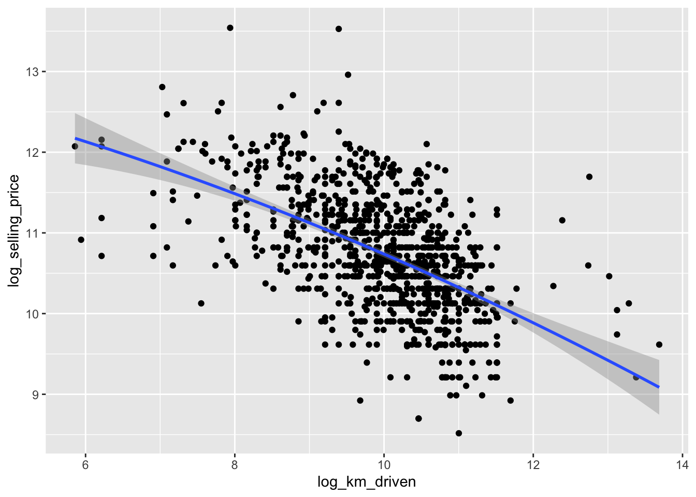
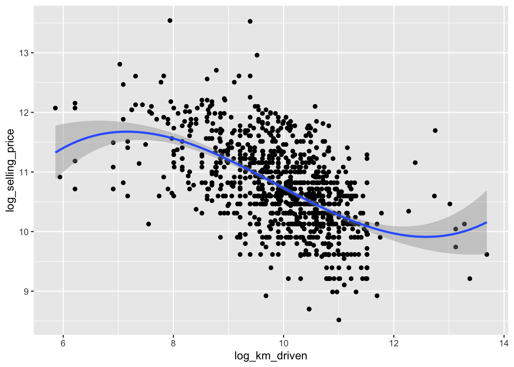
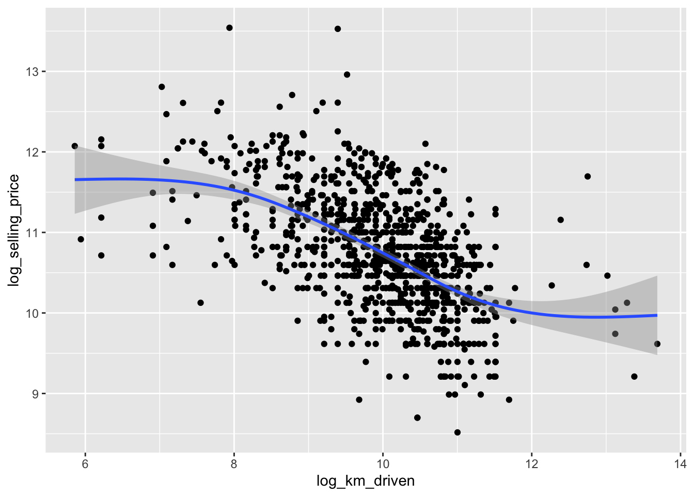

Rows: 1061 Columns: 7
── Column specification ────────────────────────────────────────────────────────
Delimiter: ","
chr (3): name, seller_type, owner
dbl (4): selling_price, year, km_driven, ex_showroom_price
ℹ Use `spec()` to retrieve the full column specification for this data.
ℹ Specify the column types or set `show_col_types = FALSE` to quiet this message.
# add a squared x termggplot(bike_data, aes(x = log_km_driven, y = log_selling_price)) +geom_point() +stat_smooth(method ="lm", formula = y ~ x +I(x^2))

# add a cubed x termggplot(bike_data, aes(x = log_km_driven, y = log_selling_price)) +geom_point() +stat_smooth(method ="lm", formula = y ~ x +I(x^2) +I(x^3))

# using method = 'gam' (generalized additive model)ggplot(bike_data, aes(x = log_km_driven, y = log_selling_price)) +geom_point() +geom_smooth()
`geom_smooth()` using method = 'gam' and formula = 'y ~ s(x, bs = "cs")'

# tree based model# never defined preds, won't runggplot(bike_data, aes(x = log_km_driven, y = log_selling_price)) +geom_point() +geom_line(data = preds, aes(x = log_km_driven, y = Tree_Predictions), color ="Blue", linewidth =2)
Training a Model
Once a class of models is chosen, we must define some criteria to fit (or train) the model
Doesn’t tell us how well we do on data we haven’t seen!
Training vs Test Sets
Ideally we want our model to predict well for observations it has yet to see!
For multiple linear regression models, our training MSE will always decrease as we add more variables to the model…
We’ll need an independent test set to predict on (more on this shortly!)
Big Picture Modeling
Supervised Learning methods try to relate predictors to a response variable through a model
Lots of common models
Regression models
Tree based methods
Naive Bayes
k Nearest Neighbors
…
For a set of predictor values, each will produce some prediction we can call \(\hat{y}\)
Evaluate model via a metric
Will use an independent test set or cross-validation to more accurately judge our model
Prediction & Training/Test Sets
In this course we focus on the predictive modeling paradigm. In the end, we’ll often fit different families of models (say some multiple linear regression models, a tree based model, and a random forest model) to a given data set. We’ll then judge those models using some model metric to determine which model is best at predicting!
Let’s break down this process into a few steps.
Predictive Modeling Idea
First we’ll choose a form for a model. The types of models to consider often depends on the subject matter at hand.
Once we’ve chosen a model type, we fit the model using some algorithm. Usually, we can write this fitting process in terms of minimizing some loss function.
We then need to determine the quality of predictions made by the model. We use a model metric to do this. Quite often, the loss function and model metric are the same, but this isn’t always the case!
For numeric response, the most common model metric is mean squared error (MSE) or root mean squared error (RMSE). For a categorical reponse, the most commmon model metrics are accuracy and log-loss (discussed in detail later).
Training vs Test Sets
Ideally we want our model to predict well for observations it has yet to see. We want to avoid overfitting to the data we train our model on.
The evaluation of predictions over the observations used to fit or train the model is called the training (set) error
Let \(y_i\) denote an observed value and \(\hat{y}_i\) denote our prediction for that observation. If RMSE was our metric,
\[\mathrm{Training\ RMSE}=\sqrt{\frac{1}{\#\text{ of observations used to fit the model}}\sum_{\text{observations used to fit the model}}(y_i-\hat{y}_i)^2}\]
If we only consider this error, we’ll have no idea how the model will fare on data it hasn’t seen!
One method to obtain a better idea about model performance is to randomly split the data into a training set and test set.
On the training set we can fit (or train) our models
We can then predict for the test set observations and judge effectiveness with our metric
We want the training set to have about 80% - 90% of the total data
Rows: 1061 Columns: 7
── Column specification ────────────────────────────────────────────────────────
Delimiter: ","
chr (3): name, seller_type, owner
dbl (4): selling_price, year, km_driven, ex_showroom_price
ℹ Use `spec()` to retrieve the full column specification for this data.
ℹ Specify the column types or set `show_col_types = FALSE` to quiet this message.
Here our response variable is the log_selling_price = ln(selling_price). We could consider the family of multiple linear regression (MLR) models with differing predictors (x variables).
The basic MLR model with \(p\) predictors models the average response variable given the predictors (that’s what \(E(Y \mid x_1, x_2, \ldots, x_p)\) represents, the average or expected \(Y\), given (that’s what the vertical bar means) the values of \(x_1\), \(x_2\), \(\ldots\), \(x_p\)) as a linear function (linear in the parameter terms).
If you are familiar with maximum likelihood, the estimated \(\beta\)’s turn out to be equivalent to doing maximum likelihood estimation with the iid error Normal, constant variance, assumption!
Consider three competing MLR models:
Model 1: log_selling_price = intercept + slope*year + Error
Model 2: log_selling_price = intercept + slope*log_km_driven + Error
We can split the data randomly into a training set and a testing set. There are a lot of ways to do this. We’ll use the rsample::initial_split() function.
We commonly use an 80/20 or 70/30 training/test split. The proportion used in this split really depends on the amount of data you have and your subject matter expertise. More data in the test set means a better estimate of the model’s performance. However, less data in the training set means a more variable model (bigger changes in predictions from data set to data set).
Let’s split our bike_data into a training and test set.
Use initial_split() to create an initial object
Use training() and testing() on that object to create the two data sets (note the number of observations in each set below!)
We can fit or train these models on the training set. Recall we use lm() to easily fit an MLR model via formula notation. With formula notation we put our response variable on the left and our model for the predictors on the right. The model can include interactions, non-linear terms, etc. If we just want ‘main effects’ we separate predictors with + on the right hand side (we’ll cover this in more detail later!)
Let’s fit our three models and save them as objects.
reg1 <-lm(log_selling_price ~ year, data = bike_train)coef(reg1)
(Intercept) year
-186.17235057 0.09777273
reg2 <-lm(log_selling_price ~ log_km_driven, data = bike_train)coef(reg2)
(Intercept) log_km_driven
14.6228627 -0.3899342
reg3 <-lm(log_selling_price ~ year + log_km_driven, data = bike_train)coef(reg3)
(Intercept) year log_km_driven
-131.66741960 0.07191291 -0.24274055
ow we have the fitted models. Want to use them to predict the response
Model 1: \(\widehat{log\_selling\_price} = −186.1724+0.0978*year\)
Model 2: \(\widehat{log\_selling\_price} = 14.6229−0.3899*log\_km\_driven\)
Model 3: \(\widehat{log\_selling\_price} = -131.6674 + 0.0719*year − 0.2427*log\_km\_driven\)
To get predictions from our model, we use the predict() function and specify the newdata we want to predict for as a data frame with column names matching our predictors in our models. If we don’t specify any newdata, it returns the predictions made on the training data.
We can see the first few predictions on the training data from the first model via the code below
Let’s use RMSE as our metric. Although not how we want to compare our models, we can obtain the training RMSE easily with predict(). Let’s code it up ourselves and also use yardstick::rmse_vec() to find it (this is the tidymodels way).
#our own calculation for training RMSEsqrt(mean((bike_train$log_selling_price -predict(reg1))^2))
[1] 0.5378694
Now we can supply the actual responses and the model predictions to yardstick::rmse_vec()
#second and third models#using yardstickrmse_vec(bike_train$log_selling_price, predict(reg2))
[1] 0.5669127
These values represent a measure of quality of prediction by these models (as judged by our metric RMSE).
This estimate of RMSE for the predictions is too optimistic compared to how the model would perform with new data!
Really, what we want to compare is how the models do on data they weren’t trained on.
We want to find this type of metric on the test set. That means we want to use the truth from the test set (\(y_i\) for the test set) and compare that to predictions made for that test set observation (\(\hat{y_i}\)).
\[\mathrm{Test\ Set\ RMSE}=\sqrt{\frac{1}{n_{\text{test}}}\sum_{i=1}^{n_{\text{test}}}(y_i-\hat{y}_i)^2}\] To do this in R we need to tell predict() about the newdata being the test set (bike_test). As this is a data frame with columns for our predictors, we can just pass the entire data frame for ease and predict() uses appropriate/needed columns to find our predictions.
#look at a few observations and predictionsbike_test |>select(log_selling_price, year) |>mutate(model_1_preds =predict(reg1, newdata = bike_test))
We see that our third model with both year and log_km_driven gives a better (by our metric) set of predictions!
When choosing a model, if the RMSE values were ‘close’, we’d want to consider the interpretability of the model (and perhaps the assumptions required by each model if inference was of interest!)
Note: we can do this with yardstick::rmse() rather than yardstick::rmse_vec() if our predictions are in the data frame. rmse() takes in the data as the first argument, the truth column as the second, and the estimate (or predictions) as the third.
#look at a few observations and predictionsbike_test |>select(log_selling_price, log_km_driven) |>mutate(model_1_preds =predict(reg1, newdata = bike_test)) |>rmse(truth = log_selling_price, estimate = model_1_preds)
# A tibble: 1 × 3
.metric .estimator .estimate
<chr> <chr> <dbl>
1 rmse standard 0.575
Recap
We generally need to go through a few steps when training and testing our model(s):
Choose the form of the model
Fit the model to the data using some algorithm
Usually this can be written as a problem where we minimize some loss function
Evaluate the model using a metric
RMSE is a very common for a numeric response
Ideally we want our model to predict well for observations it has yet to see!
Cross Validation
We’ve discussed the idea of supervised learning. In this paradigm we have a response or target variable we are trying to predict.
We posit some model for the response variable that is a function of our predictor variables.
We fit that model to data (usually can be seen as minimizing some loss function).
We judge how well our model does at predicting using some metric.
Usually we evaluate our metric on the test set after doing a training/test split.
Recall our example of fitting an MLR model from the last section of notes. There we first split the data into a training and test set. We fit the model on the training set. Then we looked at the RMSE on the test set to judge how well the models did.
where \(y_i\) is the actual response from the test set and \(\hat{y}_i\) is the prediction for that response value using the model.
Note: The terms metric and loss function are often used interchangeably. They are slightly different.
Loss function is usually referred to as the criteria used to optimize or fit the model.
For an MLR model we usually fit by minimizing the sum of squared errors (MSE or RMSE equivalently) which is the same as using maximum likelihood under the iid Normal, constant variance, error model.
In this case, MSE or RMSE would be our loss function
Our metric is the criteria for evaluating the model. When we have a numeric response, our most common criteria is RMSE! In this case the same as the common loss function for fitting the model.
We could fit our MLR model using a different loss function (say minimizing the absolute deviations). We could also evaluate our model using a different metric (say the average of the absolute deviations).
CV without a Training/Test Set Split
Sometimes we don’t have a lot of data so we don’t want to split our data into a training and test set. In this setting, CV is often used by itself to select a final model.
Consider our data set about the selling price of motorcycles:
Rows: 1061 Columns: 7
── Column specification ────────────────────────────────────────────────────────
Delimiter: ","
chr (3): name, seller_type, owner
dbl (4): selling_price, year, km_driven, ex_showroom_price
ℹ Use `spec()` to retrieve the full column specification for this data.
ℹ Specify the column types or set `show_col_types = FALSE` to quiet this message.
We can use CV error to choose between these models without doing a training/test split.
We’ll see how to do this within the tidymodels framework shortly. For now, let’s do it by hand so we can make sure we understand the process CV uses!
Implementing 10 fold Cross-Validation Ourselves
Let’s start with dividing the data into separate (distinct) folds.
Split the data into 10 separate folds (subsets)
We can do this by randomly reordering our observations and taking the first ten percent to be the first fold, 2nd ten percent to be the second fold, and so on.
nrow(bike_data)
[1] 1061
size_fold <-floor(nrow(bike_data)/10)
Each fold, except one, will have 106 observations. There will be an extra observation in this case, we’ll lump that into our last fold.
Let’s get our folds by using sample() to reorder the indices.
Then we’ll use a for loop to cycle through the pieces and save the folds in a list
set.seed(8)random_indices <-sample(1:nrow(bike_data), size =nrow(bike_data), replace =FALSE)#see the random reorderinghead(random_indices)
[1] 591 12 631 899 867 86
#create a list to save our folds infolds <-list()#now cycle through our random indices vector and take the appropriate observations to each fold#you may want to set i to 1 and run the arguments to from and to in the seq() function#change i to 2 and do the same thing to see how this worksfor(i in1:10){if (i <10) { fold_index <-seq(from = (i-1)*size_fold +1, to = i*size_fold, by =1) folds[[i]] <- bike_data[random_indices[fold_index], ] } else { #for i = 10 we need to have 1 more observation fold_index <-seq(from = (i-1)*size_fold +1, to =length(random_indices), by =1) folds[[i]] <- bike_data[random_indices[fold_index], ] }}folds[[1]]
Let’s put this process into our own function for splitting our data up!
This function will take in a data set and a number of folds (num_folds) and returns a list with the folds of the data.
get_cv_splits <-function(data, num_folds){#get fold size size_fold <-floor(nrow(data)/num_folds)#get random indices to subset the data with random_indices <-sample(1:nrow(data), size =nrow(data), replace =FALSE)#create a list to save our folds in folds <-list()#now cycle through our random indices vector and take the appropriate observations to each foldfor(i in1:num_folds){if (i < num_folds) { fold_index <-seq(from = (i-1)*size_fold +1, to = i*size_fold, by =1) folds[[i]] <- data[random_indices[fold_index], ] } else { fold_index <-seq(from = (i-1)*size_fold +1, to =length(random_indices), by =1) folds[[i]] <- data[random_indices[fold_index], ] } }return(folds)}folds <-get_cv_splits(bike_data, 10)
Now we can fit the data on nine of the folds and test on the tenth. Then switch which fold is left out and repeat the process. We’ll use MSE rather than RMSE as our metric for now.
#set the test fold numbertest_number <-10#pull out the testing foldtest <- folds[[test_number]]test
#remove the test fold from the list and use the rest as training datatrain_list <- folds[-test_number]#note that train is only length 9length(train_list)
[1] 9
Recall the purrr:reduce() function. This allows us to iteratively apply a function across an object. Here we’ll use reduce() with rbind() to combine the tibbles saved in the different folds.
#combine the other folds into train settrain <- purrr::reduce(train_list, rbind)#the other nine folds are now in traintrain
Now we can fit our model and check the metric on the test set
fit <-lm(log_selling_price ~ log_km_driven, data = train)#get test error (MSE - square RMSE)(yardstick::rmse_vec(test[["log_selling_price"]], predict(fit, newdata = test)))^2
[1] 0.3318796
Ok, let’s wrap that into a function for ease! Let y be a string for the response, x a character vector of predictors, and test_number the fold to test on.
find_test_metric <-function(y, x, folds, test_number){#pull out the testing fold test <- folds[[test_number]]#remove the test fold from the list train_list <- folds[-test_number]#combine the other folds into train set train <- purrr::reduce(train_list, rbind)#fit our model. reformulate allows us to take strings and turn that into a formula fit <-lm(reformulate(termlabels = x, response = y), data = train)#get test error (yardstick::rmse_vec(test[[y]], predict(fit, newdata = test)))^2}#double check it worksfind_test_metric(y ="log_selling_price", x ="log_km_driven", folds = folds, test_number =10)
[1] 0.3318796
We can use the purrr::map() function to apply this function to 1:10. This will use each fold as the test set once!
folds <-get_cv_splits(bike_data, 10)purrr::map(1:10, find_test_metric, y ="log_selling_price", x ="log_km_driven", folds = folds)
Now we combine these into one value! We’ll average the MSE values across the folds and then take the square root of that to obtain the RMSE (averaging square roots makes less sense, which is why we found MSE first)!
We can again use reduce() to combine all of these values into one number! We average it by dividing by the number of folds and finally find the square root to make it the RMSE!
sum_mse <- purrr::map(1:10, find_test_metric, y ="log_selling_price", x ="log_km_driven", folds = folds) |>reduce(.f = sum)sqrt(sum_mse/10)
[1] 0.5956823
Let’s put it into a function and make it generic for the number of folds we have.
find_cv <-function(y, x, folds, num_folds){ sum_mse <- purrr::map(1:num_folds, find_test_metric, y = y, x =x, folds = folds) |>reduce(.f = sum)return(sqrt(sum_mse/num_folds))}find_cv("log_selling_price", "log_km_driven", folds, num_folds =10)
[1] 0.5956823
Compare Different Models Using Our CV Functions
Now let’s compare our three separate models via 10 fold CV! We can use the same folds with different models. This will make our comparisons better (similar to using a block design if you are familiar with that).
folds <-get_cv_splits(bike_data, 10)
First let’s find our CV RMSE on our model with just year as a predictor:
year log_km_driven both
0.5508152 0.5956502 0.5135431
We see that the model that has both predictors has the lowest cross-validation RMSE!
We would now fit this ‘best’ model on the full data set!
best_fit <-lm(log_selling_price ~ year + log_km_driven, data = bike_data)best_fit
Call:
lm(formula = log_selling_price ~ year + log_km_driven, data = bike_data)
Coefficients:
(Intercept) year log_km_driven
-148.79329 0.08034 -0.22686
CV Recap
Nice! We’ve done a comparison of models on how well they predict on data they are not trained on without splitting our data into a train and test set! This is very useful when we don’t have a lot of data. Again, we would choose our best model (model 3 here) and refit the model on the full data set!
In some cases, we’ll want to use a train/test split and use CV on the training data only so we still have a separate test set for other comparisons. We’ll discuss this idea shortly! We’ll also see how to do this in the tidymodels framework rather than doing it by hand.
Multiple Linear Regression
Fitting MLR Models
Create models with the same slope but intercepts differing by a categorical variable
owner_fits <-lm(log_selling_price ~ owner + log_km_driven, data = bike_data)coef(owner_fits)
Rows: 1061 Columns: 7
── Column specification ────────────────────────────────────────────────────────
Delimiter: ","
chr (3): name, seller_type, owner
dbl (4): selling_price, year, km_driven, ex_showroom_price
ℹ Use `spec()` to retrieve the full column specification for this data.
ℹ Specify the column types or set `show_col_types = FALSE` to quiet this message.
#save creation of new variables for now!bike_split <-initial_split(bike_data, prop =0.7)bike_train <-training(bike_split)bike_test <-testing(bike_split)
initial_split() allows for stratified sampling too!
Data Preparation with tidymodels
recipes package within tidymodels allows for transformations
Process keeps track of proper values to use for you!
Start with recipe() call
Denote formula for response/predictors and data to use
summary() describes current setup (we don’t want all of these as predictors)
recipe(log_selling_price ~ ., data = bike_train) |>summary()
# A tibble: 7 × 4
variable type role source
<chr> <list> <chr> <chr>
1 name <chr [3]> predictor original
2 year <chr [2]> predictor original
3 seller_type <chr [3]> predictor original
4 owner <chr [3]> predictor original
5 km_driven <chr [2]> predictor original
6 ex_showroom_price <chr [2]> predictor original
7 log_selling_price <chr [2]> outcome original
update_role() allows you to declare types of variables (such as ID)
This keeps the variable around even when not used in a model
recipe(log_selling_price ~ ., data = bike_train) |>update_role(name, new_role ="ID") |>summary()
# A tibble: 7 × 4
variable type role source
<chr> <list> <chr> <chr>
1 name <chr [3]> ID original
2 year <chr [2]> predictor original
3 seller_type <chr [3]> predictor original
4 owner <chr [3]> predictor original
5 km_driven <chr [2]> predictor original
6 ex_showroom_price <chr [2]> predictor original
7 log_selling_price <chr [2]> outcome original
Now Add Transformation Steps
Many step_* functions to consider
step_log() to create our log_km_driven variable
step_rm() to remove a variable
step_dummy() to create dummy values for categorical variables
step_normalize() to center and scale numeric predictors
recipe(log_selling_price ~ ., data = bike_train) |>update_role(name, new_role ="ID") |>step_log(km_driven) |>step_rm(ex_showroom_price) |>#too many nasstep_dummy(owner, seller_type) |>step_normalize(all_numeric(), -all_outcomes())
• Centering and scaling for: all_numeric() -all_outcomes()
prep() & bake() the Recipe
If you have at least one preprocessing operation, prep() ‘estimates the required parameters from a training set that can be later applied to other data sets’
Linear Regression Model Specification (regression)
Computational engine: lm
Model fit template:
stats::lm(formula = missing_arg(), data = missing_arg(), weights = missing_arg())